- 실행 중인 레시피 없음
- 웨이퍼/캐리어 이동 없음
- 가스 흐름도 패널을 설정하여 밸브를 수동 제어 가능 상태로 만듭니다.
- 적재구역 N2 공급라인 밸브 닫기
- AIR INV 밸브 누르기
- EXH DMPR 밸브 누르기 → 공기 교환 시작
- 산소 농도 ≥ 19.5% 확인
- N2 공급라인 핸드밸브 닫기
- 가스 흐름도 패널 스위치 OFF(열린스위치 = 점등)
- 가스 라인 모든 핸드밸브 닫기
- 위험 가스 밸브 Lock-out / Tag-out
- 수동으로 온도 낮춘 후 OFF
- 히터 스위치 OFF
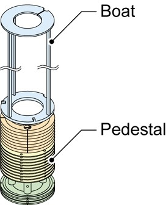
※ 오직 이 단계 중에만 해제
- 도어 프레임 Override 스위치 Pull
- BUZZER RESET 누르기
- WAVES 알람 상세 화면에서 알람 제거
- TX PAUSE / ELV PAUSE 버튼 누르기
Magnetic Fluid Seal Unit Removal
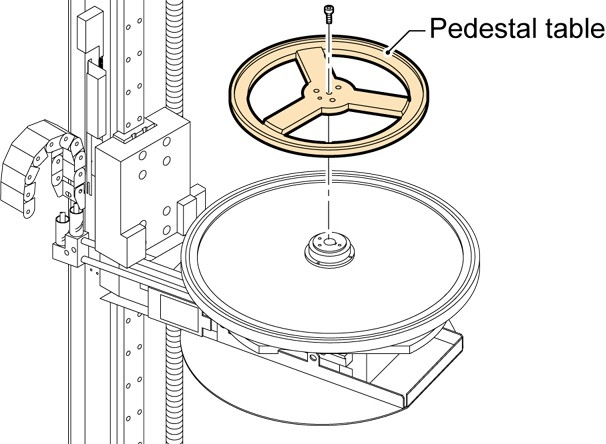
- 부착 나사 제거 후 분리
- 에탄올/DI 물티슈로 클린
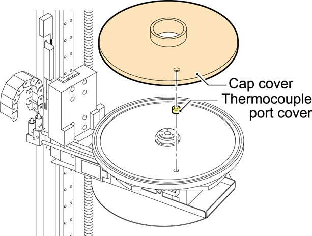

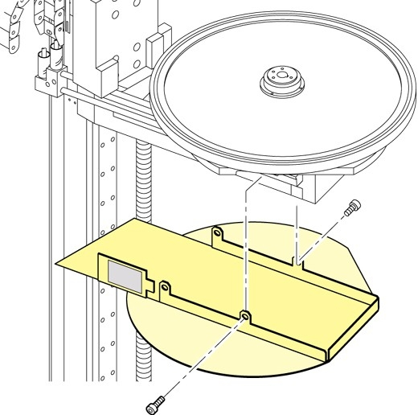
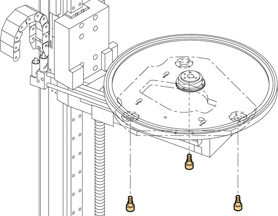
※ 누수 시 즉시 Dry → Ethanol/DI 세척
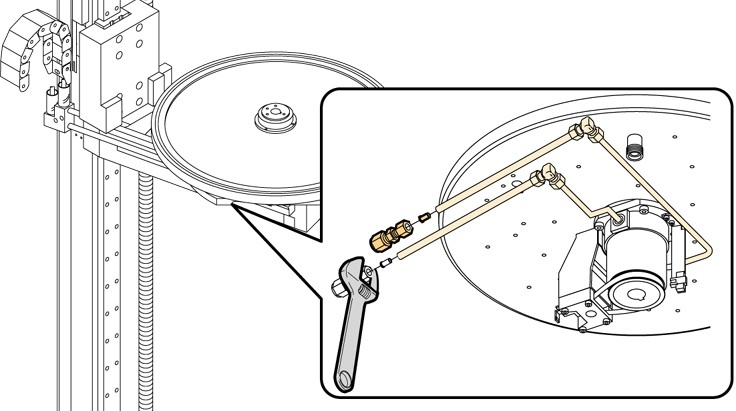
- 캡을 약간 들어 올린 상태 유지
- 수냉식 파이프 + N₂ 라인 제거
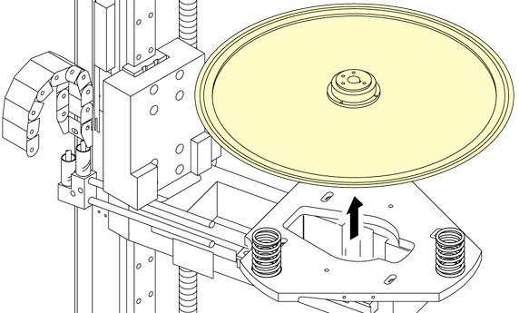
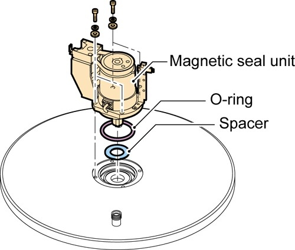
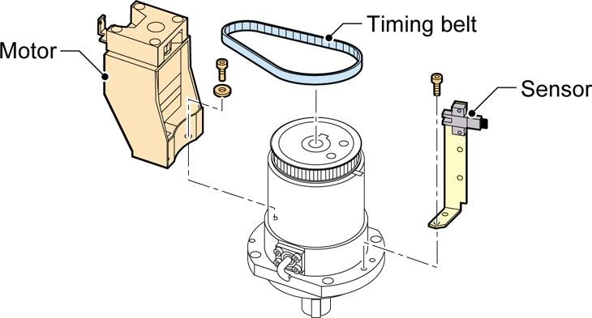
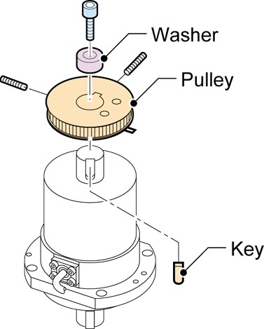
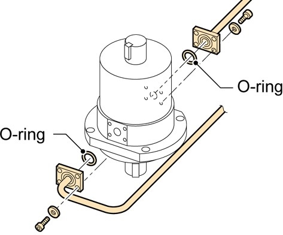
Magnetic Fluid Seal Unit Installation
- Key 아래 방향으로 설치
- 샤프트에 풀리 삽입
- Metal washer 설치
- 고정
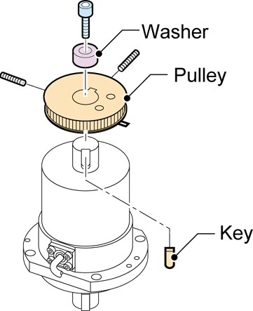
- 육각 나사 3개로 임시 설치
- Belt 장력 조정 후 Fix
- 센서 충돌 없는지 확인
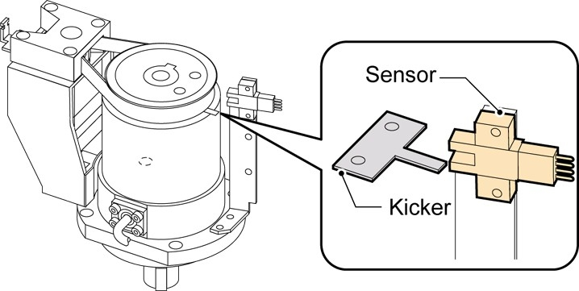
- IPA/DI 용액으로 하단 세척
- Spacer + New O-ring 설치
- 육각나사 4개로 고정
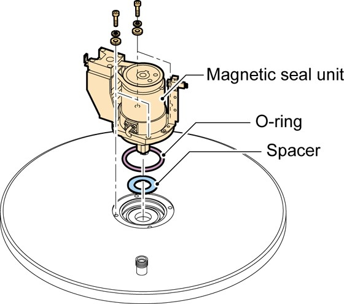